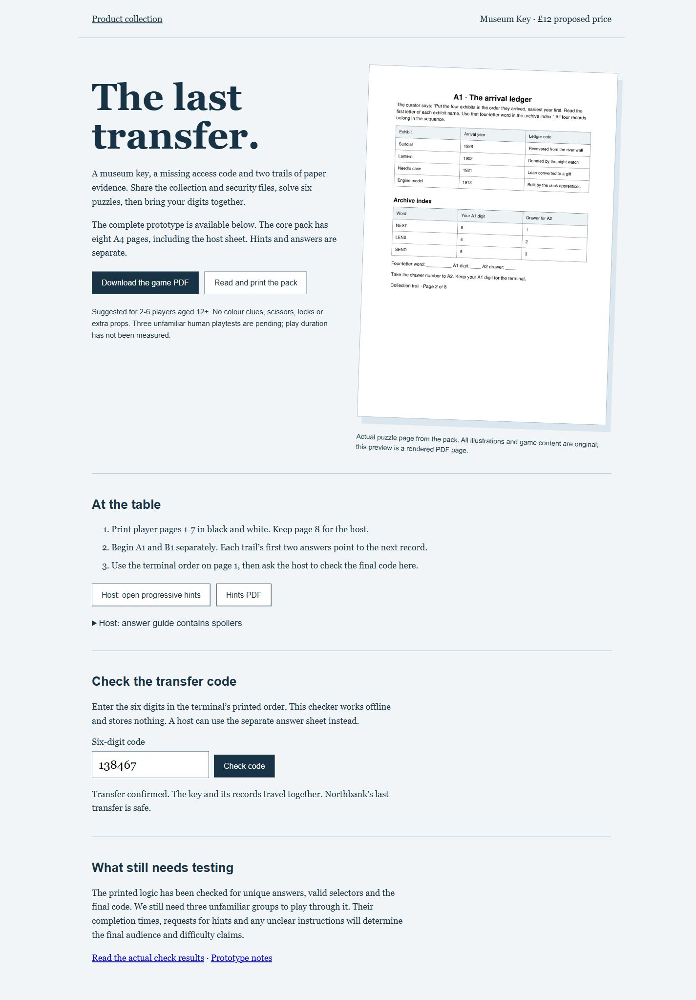

Suggested for 2-6 players aged 12+; audience and difficulty await playtests
The last transfer.
The fictional Northbank Museum is moving its collection. A brass key must travel with its donor records, but the terminal’s access code is missing. Work through the collection and security files in parallel, then bring your results together. The complete prototype includes all clues, host instructions, progressive hints and separate answers. Black and white printing is enough.
No live sale.
Eight-page A4 game PDF and printable HTML; separate hints and answer guides
This preview cannot take payment or place an order. The download offer still needs customer validation.

The last transfer: a printable museum escape game
Follow two three-puzzle trails, then combine all six results into the museum transfer code.
Read this first
- Prototype: three unfamiliar human playtests are pending
- Completion time, enjoyment, difficulty and group-size suitability have not been measured
- Once solved, the same group will know the answers
- Paper, printing and a pen are not supplied
Read all product limits
- The offline checker’s answer can be seen in its source; use the host answer sheet if this matters
What’s included
- Eight A4 core pages: briefing and terminal, six puzzle pages, host instructions
- Seven player pages with all clues printed
- Two-page progressive hint guide, separate from the game
- Two-page answer guide with full working
- Printable HTML and PDF versions of every guide
- Offline final-code checker
- Original puzzle content and a rendered preview of the actual PDF
A look at the product.
This public page shows a limited fictional sample. Full tools, puzzle answers and downloadable packs are kept in the private local preview.
Follow two three-puzzle trails, then combine all six results into the museum transfer code.
The sample is read-only. A native Shopify product and checkout have not been connected.
Before you decide.
What do I need?
Print the seven player pages on A4 paper and use a pen. The eighth core page is for the host. No scissors, locks, envelopes or colour printing are required.
How long does it take?
We have not yet measured completion time with unfamiliar players. The game has no built-in time limit.
Can the host play?
A host who avoids the separate answers can join the puzzles. Use the offline final-code checker when ready. Opening the answer guide reveals the solutions.
Is it ready to sell as a tested game?
No. This is a complete playable prototype with digital logic checks. Three unfamiliar human groups still need to test the instructions, hints and experience.
Can I buy this here?
This is a storefront prototype with a local cart and checkout simulation. It does not accept payments, collect your address or place an order. A native Shopify product and checkout still need to be connected.
What does the proposed price mean?
It is a price to test with potential customers. Demand, support costs and any physical production costs have not yet been validated.